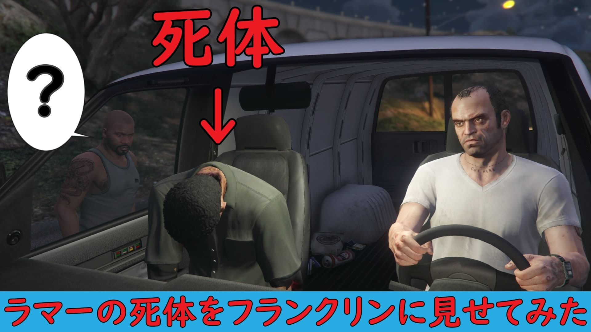

ラマーの遺体を親友に見せるドッキリ 11/20 2021 カテゴリー：新作動画  幼いころから共に人生を歩んできたフランクリンとラマー。そんな二人にトレバーがハッピーサプライズを決行 そのサプライズとは、ずばり「ラマーの遺体」をフランクリンに見せるという一世一代のドッキリ 親友のラマーの遺体を見たフランクリンはどのような反応を見せてくれるのか？トレバーのサプライズは成功するのだろうか？結末はぜひYouTubeでご覧ください 動画を再生する